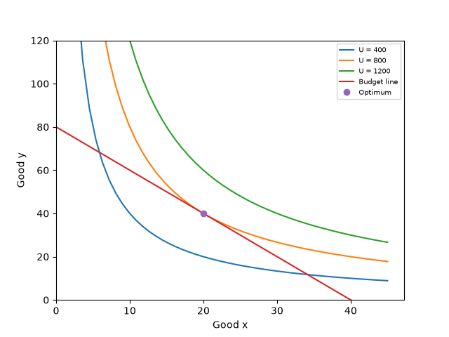
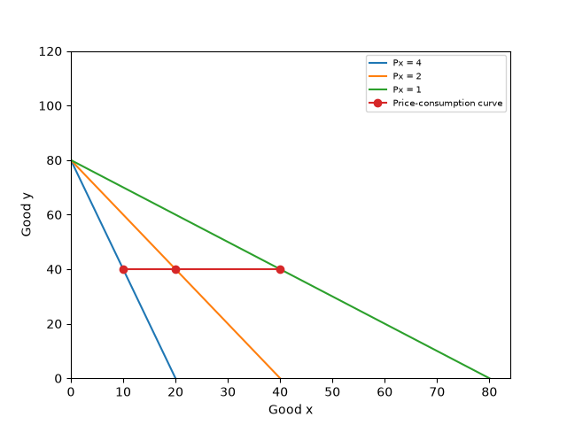

第 2 章: 予算制約と最適消費¶
2.1 この章の地図¶
前の章で、消費者の好みを、無差別曲線で表しました。右上の曲線ほど効用が高いので、消費者は、できるだけ右上の点を選びたくなります。しかし、所得には限りがあります。買える組み合わせは、予算制約線の内側に限られます。この章では、予算線と無差別曲線を重ねて、効用が最大になる点（最適消費点）を探します。

| 項目 | 内容 |
|---|---|
| 経済学の題材 | 予算制約線（傾き・切片・価格と所得の変化）、最適消費点（限界代替率 = 価格比） |
| 使う Python の機能 | 関数、リスト内包表記、max（key 引数）、テスト（pytest）。NumPy は、この章では使いません |
| 新しく導入するライブラリ | なし（Matplotlib は第 1 章から） |
| 完成形 | budget_line_y、budget_slope、budget_intercepts、is_affordable、optimal_bundle、optimal_bundle_by_grid、tangency_gap |
| ファイル | 実装: lib/chapter02/budget.py、lib/chapter02/plot.py（図）／テスト: test/chapter02/test_budget.py、test/chapter02/test_plot.py（自分で書くときは、practice/chapter02/ に、同じ名前で作ります） |
| データ | なし（手計算できる小さな例だけ） |
経済学の式とコードの対応¶
| 経済学 | 式 | コード |
|---|---|---|
| 予算制約線 | Px·x + Py·y = m（y = (m − Px·x) ÷ Py） | budget_line_y(income, px, py, x) |
| 予算線の傾き | −Px ÷ Py（価格比のマイナス） | budget_slope(px, py) |
| 予算線の切片 | (m ÷ Px, m ÷ Py) | budget_intercepts(income, px, py) |
| 買える組み合わせ | Px·x + Py·y ≤ m | is_affordable(x, y, income, px, py) |
| 最適消費点（コブ・ダグラス型） | x = a/(a+b) · m/Px、y = b/(a+b) · m/Py | optimal_bundle(income, px, py, a, b) |
| 最適消費点（格子点の探索） | 予算線の上で、効用が最大の点 | optimal_bundle_by_grid(income, px, py, a, b, steps) |
| 接点の条件 | MRS = Px ÷ Py | tangency_gap(x, y, px, py, a, b)（差が 0） |
前提とする章¶
| できること | 場所 |
|---|---|
| 効用・無差別曲線・限界代替率を、関数にする | この連載の第 1 章 |
| 関数と pytest のテストを書く、リスト内包表記を使う | 第 1 シリーズの第 1〜6 章 |
効用最大化は、第 1 シリーズの第 10 章（SciPy による最適化）と題材が重なります。この記事は、SciPy を使わず、閉じた式と格子点の探索の 2 通りで解き、答えが一致することを、テストにします。
2.2 準備¶
cd apps/micro-basics-programming/python
uv sync
uv run pytest test/chapter02
42 passed
自分でコードを書くときは、practice/chapter02/ に、budget.py と test_budget.py を作ります。テストの import は、from practice.chapter02.budget import ... に書き換えます（この記事の読み方を参照）。第 1 章の関数（cobb_douglas_utility など）は、完成形の lib/chapter01/ から import してかまいません。
2.3 予想する¶
効用が U = x·y の消費者がいます。所得は 80、財 x の価格は Px = 2、財 y の価格は Py = 1 です。紙で、手計算で答えてください。答えは、この節には書いてありません。「プログラミング」の節の「予想の答え合わせ」で、プログラムを動かして確かめます。
- 予算線の傾きと、切片（x 切片と y 切片）は、いくつですか
- 最適消費点（効用が最大になる (x, y)）は、どこですか。そのときの効用は、いくつですか
- 最適消費点で、限界代替率（MRS = y ÷ x）と、価格比（Px ÷ Py）の差は、いくつですか
- 財 x の価格が 2 から 1 に下がると、最適消費点は、どう動きますか。所得が 160 に増えると、どう動きますか
2.4 予算制約と最適消費の考え方¶
予算制約線¶
財 x の価格が Px、財 y の価格が Py、所得が m のとき、使い切る組み合わせは、次の式を満たします。
Px · x + Py · y = m
この式を y について解くと、予算線です。
- 傾きは、−Px ÷ Py（価格比のマイナス）。財 x を 1 単位増やすために、あきらめる財 y の量
- 切片は、m ÷ Px（全部を x に使った量）と、m ÷ Py（全部を y に使った量）
- 価格が変わると、その財の側の切片が動き、傾きが変わる（財 x が値下がりすると、x 切片だけが右へ動く）
- 所得が変わると、傾きは同じまま、平行に動く
予算線の上と内側が、買える組み合わせです。
最適消費点¶
消費者は、買える組み合わせのうち、効用が最大の点を選びます。ふつうの無差別曲線では、予算線と接する点です。
最適消費点では、限界代替率（無差別曲線の接線の傾きの大きさ）= 価格比（予算線の傾きの大きさ）
限界代替率は「自分にとっての、財 x の価値（財 y で測る）」、価格比は「市場での、財 x の値段（財 y で測る）」です。自分の評価が市場の値段より高ければ、もっと買いたく、低ければ、買いすぎなので、2 つが等しくなる点で、落ち着きます。
コブ・ダグラス型 U = x^a · y^b では、所得のうち、a/(a+b) を財 x に、b/(a+b) を財 y に使うことが、式から分かります（閉じた式）。
2.5 プログラミング¶
Red: 予算線のテスト¶
最初のテストを書きます。所得 80、Px = 2、Py = 1 で、予算線は、手計算できます。
import pytest
from lib.chapter01.utility import (
cobb_douglas_utility,
marginal_rate_of_substitution,
)
from lib.chapter02.budget import (
budget_intercepts,
budget_line_y,
budget_slope,
is_affordable,
optimal_bundle,
optimal_bundle_by_grid,
tangency_gap,
)
M, PX, PY = 80, 2, 1
def test_予算線は所得を使い切る点を結ぶ() -> None:
assert budget_line_y(M, PX, PY, 0) == 80
assert budget_line_y(M, PX, PY, 20) == 40
assert budget_line_y(M, PX, PY, 40) == 0
def test_予算線の傾きは価格比のマイナス() -> None:
assert budget_slope(PX, PY) == -2
assert budget_slope(1, 2) == pytest.approx(-0.5)
def test_予算線の切片は所得を価格で割った値() -> None:
assert budget_intercepts(M, PX, PY) == (40, 80)
def test_財xが値下がりするとx切片だけが右へ動く() -> None:
assert budget_intercepts(M, 1, PY) == (80, 80)
assert budget_slope(1, PY) == -1
def test_所得が増えると予算線は平行に動く() -> None:
assert budget_intercepts(160, PX, PY) == (80, 160)
assert budget_slope(PX, PY) == -2
budget_line_y などがまだないので、テストは失敗します（Red）。
テストの import の一覧は、完成形の全関数です。自分で書くときは、関数を 1 つ書くたびに、その名前を、import に足していってかまいません（まだ書いていない関数を import すると、ImportError になり、Green になりません）。
Green: 予算線を実装する¶
def _check_budget(income: float, px: float, py: float) -> None:
validate_non_negative(income, "所得は、0 以上にする")
validate_positive(px, "財 x の価格は、正にする")
validate_positive(py, "財 y の価格は、正にする")
def budget_line_y(income: float, px: float, py: float, x: float) -> float:
"""予算線の上の、財 y の量。y = (m − Px·x) ÷ Py。"""
_check_budget(income, px, py)
return (income - px * x) / py
def budget_slope(px: float, py: float) -> float:
"""予算線の傾き −Px ÷ Py（価格比のマイナス）。"""
validate_positive(px, "財 x の価格は、正にする")
validate_positive(py, "財 y の価格は、正にする")
return -px / py
def budget_intercepts(income: float, px: float, py: float) -> tuple[float, float]:
"""予算線の切片 (m ÷ Px, m ÷ Py)。全部を、財 x だけ・財 y だけに使った量。"""
_check_budget(income, px, py)
return income / px, income / py
def is_affordable(x: float, y: float, income: float, px: float, py: float) -> bool:
"""組み合わせ (x, y) が、所得で買えるか（予算線の上か内側か）。"""
_check_budget(income, px, py)
return px * x + py * y <= income + _AFFORDABLE_TOLERANCE
import と補助関数（写すときに足す）
記事の抜粋には、import と、先頭が _ の補助関数・定数を、省いています。完成形のファイルの先頭にある、次の部分を、写してください。
lib/chapter02/budget.py
from lib.chapter01.utility import (
cobb_douglas_utility,
marginal_rate_of_substitution,
)
from lib.chapter01.validation import validate_non_negative, validate_positive
# 予算線の上かの判定で、浮動小数点の誤差を許す
_AFFORDABLE_TOLERANCE = 1e-9
def _check_budget(income: float, px: float, py: float) -> None:
validate_non_negative(income, "所得は、0 以上にする")
validate_positive(px, "財 x の価格は、正にする")
validate_positive(py, "財 y の価格は、正にする")
def _check_exponents(a: float, b: float) -> None:
validate_positive(a, "べき指数 a は、正にする")
validate_positive(b, "べき指数 b は、正にする")
lib/chapter02/plot.py
from collections.abc import Sequence
import matplotlib.pyplot as plt
from matplotlib.axes import Axes
from matplotlib.figure import Figure
from lib.chapter01.utility import indifference_curve_y
from lib.chapter02.budget import budget_intercepts, optimal_bundle
_POINTS = 50
def _style(ax: Axes, y_top: float) -> None:
ax.set_xlabel("Good x")
ax.set_ylabel("Good y")
ax.set_xlim(left=0)
# 無差別曲線は、x が小さいと、立ち上がるので、予算線の y 切片の 1.5 倍までを見せる
ax.set_ylim(0, 1.5 * y_top)
ax.legend(fontsize="x-small")
test/chapter02/test_plot.py
from collections.abc import Sequence
from typing import cast
import pytest
from matplotlib.axes import Axes
from matplotlib.lines import Line2D
from lib.chapter01.utility import cobb_douglas_utility
from lib.chapter02.plot import plot_optimal_choice, plot_price_change
入力のチェックは、第 1 章の共通関数 validate_positive・validate_non_negative を使います。価格は正、所得は 0 以上です。価格が 0.5 や 0.25 のような、0 より大きく 1 未満の値も、有効です（テスト test_価格が1未満の正の値でも予算線を引ける）。
is_affordable は、浮動小数点の誤差を許します。予算線のちょうど上の点は、買えるからです（許容誤差は 1e-9。テスト test_予算線の上の点は買えるが誤差を許す）。
最適消費点¶
最適消費点は、予算線の上で、効用が最大の点です。手計算では、所得を半分ずつ使うので、(20, 40) です。このとき、効用は 800 で、予算線の上の他の点（x = 5・10・15・25・30・35）は、どれも、効用が 800 より低くなります。先にテストにします。
def test_最適消費点は予算を半分ずつ使う() -> None:
assert optimal_bundle(M, PX, PY) == (20, 40)
def test_最適消費点は予算線の上にある() -> None:
x, y = optimal_bundle(M, PX, PY)
assert PX * x + PY * y == pytest.approx(M)
def test_最適点では限界代替率が価格比と等しい() -> None:
x, y = optimal_bundle(M, PX, PY)
assert marginal_rate_of_substitution(x, y) == pytest.approx(PX / PY)
assert tangency_gap(x, y, PX, PY) == pytest.approx(0, abs=1e-12)
def test_予算線の上の他の点は効用が低い() -> None:
best = cobb_douglas_utility(*optimal_bundle(M, PX, PY))
assert best == 800
for x in (5, 10, 15, 25, 30, 35):
y = budget_line_y(M, PX, PY, x)
assert cobb_douglas_utility(x, y) < best
def _check_exponents(a: float, b: float) -> None:
validate_positive(a, "べき指数 a は、正にする")
validate_positive(b, "べき指数 b は、正にする")
def optimal_bundle(
income: float, px: float, py: float, a: float = 1.0, b: float = 1.0
) -> tuple[float, float]:
"""コブ・ダグラス型の最適消費点（閉じた式）。
x = a/(a+b) · m/Px、y = b/(a+b) · m/Py。所得の割合を、指数の比で配分する。
"""
_check_budget(income, px, py)
_check_exponents(a, b)
share_x = a / (a + b)
return share_x * income / px, (1 - share_x) * income / py
def tangency_gap(
x: float, y: float, px: float, py: float, a: float = 1.0, b: float = 1.0
) -> float:
"""限界代替率と価格比の差 MRS − Px ÷ Py。
最適消費点では 0（無差別曲線が、予算線に接する）。
"""
validate_positive(px, "財 x の価格は、正にする")
validate_positive(py, "財 y の価格は、正にする")
return marginal_rate_of_substitution(x, y, a, b) - px / py
tangency_gap は、限界代替率 − 価格比です。最適消費点では、0 になります。最適点でない点（例えば (10, 60)）では、0 になりません（test_最適点でない点は限界代替率と価格比が食い違う）。
格子点の探索で確かめる¶
閉じた式は、コブ・ダグラス型だから使えます。一般の効用では、式が求まらないことがあるので、予算線の上を細かく区切って、効用が最大の点を探す方法も、書いておきます。2 通りの答えが一致すれば、どちらも正しいという、強い確認になります。
def test_格子点の探索は閉じた式と一致する() -> None:
x, y = optimal_bundle_by_grid(M, PX, PY)
assert x == pytest.approx(20)
assert y == pytest.approx(40)
def test_格子点の探索は別の価格でも一致する() -> None:
assert optimal_bundle_by_grid(90, 3, 2) == pytest.approx((15, 22.5))
assert optimal_bundle(90, 3, 2) == pytest.approx((15, 22.5))
def test_べき指数が違う効用でも格子点の探索は閉じた式に近い() -> None:
closed = optimal_bundle(M, PX, PY, 1, 2)
assert closed == pytest.approx((80 / 3 / 2, 160 / 3))
grid = optimal_bundle_by_grid(M, PX, PY, 1, 2)
assert grid == pytest.approx(closed, abs=0.1)
def optimal_bundle_by_grid(
income: float,
px: float,
py: float,
a: float = 1.0,
b: float = 1.0,
steps: int = 400,
) -> tuple[float, float]:
"""予算線の上を steps 等分して、効用が最大の点を探す（閉じた式の答え合わせ用）。"""
_check_budget(income, px, py)
_check_exponents(a, b)
validate_positive(steps - 1, "格子の分割数は、2 以上にする")
x_max = income / px
xs = [x_max * i / steps for i in range(steps + 1)]
points = [(x, max(0.0, (income - px * x) / py)) for x in xs]
# 効用が同じ点が複数あれば、先に見つけた点（x の小さいほう）を返す
return max(points, key=lambda p: cobb_douglas_utility(p[0], p[1], a, b))
効用が同じ点が複数あれば、max は、先に見つけた点（x の小さいほう）を返します。格子点の探索は、区切りの幅（分割数 steps）の分だけ、誤差があります。指数が違うとき（a = 1、b = 2）は、最適な x = 13.33 が格子の上にないので、幅（0.1）以内の誤差で、一致を確かめます（abs=0.1）。
予想の答え合わせ¶
予想した答えを、プログラムで確かめます。
このスクリプトは、完成形（
lib/）を読みます。自分のコードで確かめるときは、import を、from practice.chapterNN...に書き換えてください。
from lib.chapter01.utility import cobb_douglas_utility
from lib.chapter02.budget import (
budget_intercepts,
budget_slope,
optimal_bundle,
optimal_bundle_by_grid,
tangency_gap,
)
print("予算線の傾き:", budget_slope(2, 1))
print("予算線の切片:", budget_intercepts(80, 2, 1))
x, y = optimal_bundle(80, 2, 1)
print("最適消費点:", (x, y), "効用:", cobb_douglas_utility(x, y))
print("接点の条件 MRS − 価格比:", tangency_gap(x, y, 2, 1))
print("Px = 1 の最適消費点:", optimal_bundle(80, 1, 1))
print("所得 160 の最適消費点:", optimal_bundle(160, 2, 1))
print("格子点の探索:", optimal_bundle_by_grid(80, 2, 1))
予算線の傾き: -2.0
予算線の切片: (40.0, 80.0)
最適消費点: (20.0, 40.0) 効用: 800.0
接点の条件 MRS − 価格比: 0.0
Px = 1 の最適消費点: (40.0, 40.0)
所得 160 の最適消費点: (40.0, 80.0)
格子点の探索: (20.0, 40.0)
- 1 つ目の問い: 傾きは −2（価格比 −Px ÷ Py = −2）、切片は (40, 80) です。80 ÷ 2 = 40 と、80 ÷ 1 = 80 です
- 2 つ目の問い: 最適消費点は (20, 40)、効用は 800 です。所得 80 の半分（40）を財 x に使い（40 ÷ 2 = 20 単位）、半分（40）を財 y に使います（40 単位）
- 3 つ目の問い: 限界代替率（40 ÷ 20 = 2）と価格比（2 ÷ 1 = 2）の差は 0 です。自分の評価と、市場の値段が、等しくなる点です
- 4 つ目の問い: 財 x が 2 から 1 に値下がりすると、最適点は (40, 40) に動きます。x が 20 から 40 に増え、y は 40 のまま変わりません（コブ・ダグラス型では、所得の半分を、いつも財 y に使うため）。所得が 160 に増えると、(40, 80) と、どちらも 2 倍になります
- 格子点の探索も、(20, 40) で、閉じた式と一致しました
図¶
（図の関数の import と補助関数（_POINTS・_style など）は、上の折りたたみ「import と補助関数」の、plot.py と test_plot.py の項目にあります。）
予算線と無差別曲線を重ねる関数と、座標のテストです。予算線の両端が切片であること、最適点が接点であることを、確かめます。
描画のテストと実装（後回しにしても、学習は成り立ちます）
def xs(line: Line2D) -> list[float]:
return [float(v) for v in cast(Sequence[float], line.get_xdata())]
def ys(line: Line2D) -> list[float]:
return [float(v) for v in cast(Sequence[float], line.get_ydata())]
def line(ax: Axes, label: str) -> Line2D:
return next(item for item in ax.lines if item.get_label() == label)
def choice() -> Axes:
return plot_optimal_choice(80, 2, 1, [400, 800, 1200], 45).axes[0]
def test_最適消費点の図の線() -> None:
ax = choice()
assert [item.get_label() for item in ax.lines] == [
"U = 400",
"U = 800",
"U = 1200",
"Budget line",
"Optimum",
]
def test_予算線の端は両軸の切片() -> None:
budget = line(choice(), "Budget line")
assert xs(budget) == [0, 40]
assert ys(budget) == [80, 0]
def test_最適消費点は予算線と無差別曲線の接点() -> None:
ax = choice()
optimum = line(ax, "Optimum")
assert xs(optimum) == [20]
assert ys(optimum) == [40]
curve = line(ax, "U = 800")
for x, y in zip(xs(curve), ys(curve), strict=True):
assert cobb_douglas_utility(x, y) == pytest.approx(800)
def plot_optimal_choice(
income: float, px: float, py: float, levels: Sequence[float], x_max: float
) -> Figure:
"""無差別曲線と予算線を重ね、接する点（最適消費点）に印をつける。"""
step = x_max / _POINTS
xs = [step * (i + 1) for i in range(_POINTS)]
fig, ax = plt.subplots()
for level in levels:
ax.plot(xs, [indifference_curve_y(level, x) for x in xs], label=f"U = {level}")
x_intercept, y_intercept = budget_intercepts(income, px, py)
ax.plot([0, x_intercept], [y_intercept, 0], label="Budget line")
x, y = optimal_bundle(income, px, py)
ax.plot([x], [y], "o", label="Optimum")
_style(ax, y_intercept)
plt.close(fig)
return fig
財 x の価格が下がると、予算線の x 切片だけが右へ動きます。各価格の最適点をつなぐと、価格消費曲線になります。第 3 章で、ここから需要曲線を作ります。

描画のテストと実装（後回しにしても、学習は成り立ちます）
def price_change() -> Axes:
return plot_price_change(80, [4, 2, 1], 1).axes[0]
def test_価格変化の図は価格ごとに予算線と最適点() -> None:
ax = price_change()
assert [item.get_label() for item in ax.lines] == [
"Px = 4",
"Px = 2",
"Px = 1",
"Price-consumption curve",
]
def test_価格が下がるとx切片だけが右へ動く() -> None:
ax = price_change()
assert [xs(line(ax, f"Px = {p}"))[1] for p in (4, 2, 1)] == [20, 40, 80]
assert [ys(line(ax, f"Px = {p}"))[0] for p in (4, 2, 1)] == [80, 80, 80]
def test_価格消費曲線は各価格の最適点をつなぐ() -> None:
curve = line(price_change(), "Price-consumption curve")
assert xs(curve) == pytest.approx([10, 20, 40])
assert ys(curve) == pytest.approx([40, 40, 40])
def plot_price_change(income: float, prices: Sequence[float], py: float) -> Figure:
"""価格が下がると、予算線の x 切片だけが右へ動く。最適点をつなぐと価格消費曲線。"""
fig, ax = plt.subplots()
bundles = []
for price in prices:
x_intercept, y_intercept = budget_intercepts(income, price, py)
ax.plot([0, x_intercept], [y_intercept, 0], label=f"Px = {price}")
bundles.append(optimal_bundle(income, price, py))
ax.plot(
[x for x, _ in bundles],
[y for _, y in bundles],
"o-",
label="Price-consumption curve",
)
_style(ax, y_intercept)
plt.close(fig)
return fig
ノートブックで試す¶
数字を書き換えて、結果と図が変わるのを、手軽に確かめられます。apps/micro-basics-programming/python/notebooks/ch02_budget_and_optimal_choice.ipynb を開き、「Parameters」のセルの数字（所得、価格、効用のべき指数）を書き換えて、上から順に実行します。起動は、アプリのディレクトリで uv run --with jupyterlab jupyter lab notebooks/ です。
実行結果¶
uv run pytest test/chapter02
42 passed
2.6 規則で言うと¶
- 最適消費点は、無差別曲線と予算線が接する点である。 限界代替率（自分の評価）が、価格比（市場の値段）と等しい
- 価格が変わると、予算線の傾きと切片が変わる。所得が変わると、傾きは同じで、平行に動く
- 2 通りの方法で、同じ答えを確かめる。 閉じた式と、格子点の探索が一致すれば、どちらも正しい
混同しやすい点を、表にまとめます。
| 混同しやすい点 | 違い |
|---|---|
| 予算線の傾きと、無差別曲線の傾き | 予算線の傾きは、価格比（市場が決める）。無差別曲線の傾きは、限界代替率（好みが決める）。2 つが等しい点が、最適 |
| 価格の変化と、所得の変化 | 価格が動くと、傾きと切片が変わる。所得が動くと、平行に動く |
| 買える点と、最適な点 | 予算線の内側は、買えるが、所得が余る。最適な点は、予算線の上にある（所得を使い切る） |
| 切片と、最適な量 | 切片は、全部を一方に使った量。最適な量は、コブ・ダグラス型では、切片の a/(a+b)・b/(a+b) 倍 |
このモデルが成り立たない場面¶
- 貯蓄・借入はありません。 所得を、その期に、使い切ると仮定しています。実際は、貯蓄や借入で、期をまたぎます
- 価格は、消費者が決められません（プライステイカー）。大量に買えば、値段が上がる市場では、予算線は直線になりません
- 無差別曲線が原点に凸なら、接点が最適です（十分条件）。 完全代替財や、原点に凹の曲線では、端の点（片方だけを買う）が最適になることがあります（角解）
- 財は、細かく分けられると仮定しています。 車や家は、1 台・1 軒の単位でしか買えません
2.7 練習問題¶
| 種類 | 問題 |
|---|---|
| 想起 | 本文を閉じて、budget_intercepts の最初のテスト（所得 80、Px = 2、Py = 1 で、切片が (40, 80)）を書いてください |
| 生成 | 解説を見る前に、所得のうち、財 x と財 y に使う割合を返す spending_shares(income, px, py, a, b) を、テストから書いてください。a = b = 1 で、(0.5, 0.5) になります。a = 1、b = 3 では、いくつになりますか |
| 多様 | 財 x の価格を 4 に変えます（所得 80、Py = 1）。最適消費点は、どこですか。先に予想してから、テストで確かめてください |
| 交互 | 第 1 シリーズの第 3 章のリスト内包表記で、Px = 4・2・1 の x 切片と、最適な x を、一度に計算してください。支出の割合は、どの価格でも変わりませんか |
解答（先に自分で取り組んでから、開いてください）
想起:
def test_予算線の切片() -> None:
assert budget_intercepts(80, 2, 1) == (40, 80)
生成: 財 x への支出は Px × x なので、所得で割ります。
def spending_shares(income, px, py, a=1.0, b=1.0):
x, y = optimal_bundle(income, px, py, a, b)
return px * x / income, py * y / income
def test_支出の割合は指数の比() -> None:
assert spending_shares(80, 2, 1) == pytest.approx((0.5, 0.5))
assert spending_shares(80, 2, 1, 1, 3) == pytest.approx((0.25, 0.75))
a = 1、b = 3 では、(1 ÷ 4, 3 ÷ 4) = (0.25, 0.75) です。支出の割合は、価格にも所得にも、よりません。指数の比だけで決まります。
多様: x = (1/2) × 80 ÷ 4 = 10、y = (1/2) × 80 ÷ 1 = 40 で、(10, 40) です。価格が 2 倍になったので、x が半分になりました。
def test_Pxが4のときの最適消費点() -> None:
assert optimal_bundle(80, 4, 1) == (10, 40)
交互:
def test_価格ごとの切片と最適なxと支出の割合() -> None:
prices = [4, 2, 1]
intercepts = [budget_intercepts(80, p, 1)[0] for p in prices]
xs = [optimal_bundle(80, p, 1)[0] for p in prices]
shares = [p * x / 80 for p, x in zip(prices, xs)]
assert intercepts == [20, 40, 80]
assert xs == [10, 20, 40]
assert shares == [0.5, 0.5, 0.5]
2.8 振り返り¶
- うまくいったこと:
- 詰まったこと:
- 次に試すこと:
2.9 まとめ¶
- 予算制約線は、所得を使い切る組み合わせ。傾きは −Px ÷ Py（価格比）、切片は m ÷ Px と m ÷ Py。価格が変わると傾きと切片が変わり、所得が変わると平行に動く
- 最適消費点は、無差別曲線と予算線が接する点で、限界代替率が価格比と等しい。コブ・ダグラス型では、所得の a/(a+b) を財 x に、b/(a+b) を財 y に使う
- 閉じた式と、格子点の探索の 2 通りで解き、一致をテストにした。浮動小数点の誤差は、許容誤差で扱う
- 価格が下がると、予算線の x 切片だけが右へ動き、最適点をつなぐと、価格消費曲線になる
次の章では、価格を動かしながら最適消費点を求め、その財 x の量を価格に対して並べて、需要曲線を作ります。そして、価格が変わると需要がどれだけ動くかを表す弾力性を計算します。